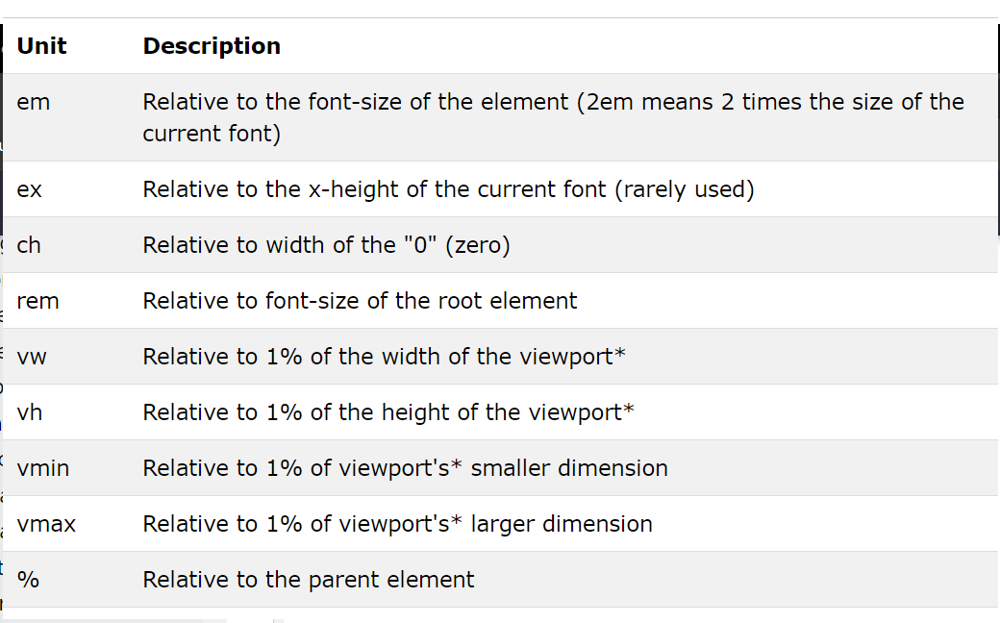

The absolute length units are fixed and a length expressed in any of these will appear as exactly that size. Absolute length units are not recommended for use on screen, because screen sizes vary so much. However, they can be used if the output medium is known, such as for print layout.
Relative length units specify a length relative to another length property. Relative length units scales better between different rendering mediums.
